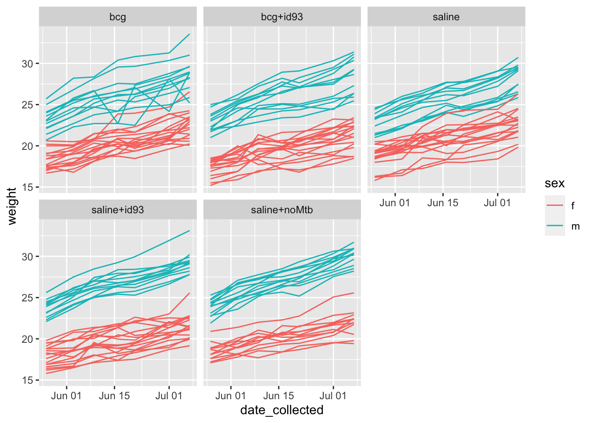

Chapter 4 Mouse Weights
4.0.1 Overview
Extreme weight loss and loss of muscle mass, also known as cachexia, typically presents along side chronic inflammatory illnesses like Tuberculosis disease (Baazim, Antonio-Herrera, and Bergthaler 2022). We now recognize that cachexia is part of a systemic response to inflammation, and has been linked to upregulation of pro-inflammatory cytokines such as TNF, IL-6, and IFNg in humans (Baazim, Antonio-Herrera, and Bergthaler 2022). Additionally, studies support the role of key immune cell populations such as CD8+ T-cells that, when depleted, counteract muscle and fat deterioration (Baazim et al. 2019), and suggest that CD8+ T-cells may metabolically reprogram adipose tissue.
In recognition of cachexia related illnesses and diseases, we tracked the progression of weight loss over the course of this study, as is done with many TB-mouse studies (Smith et al. 2022; Segueni et al. 2016). These data is also useful when correlating to CFU count as well as expression of cytokines and other biological markers (Smith et al. 2022). Here, mice are weighed in grams weekly to monitor clinical status as TB patients frequently display weight loss as clinical symptom associated with disease progression.
The following contains information about how the data was collected, organized, and curated for analysis in RStudio.
4.0.2 Parameters
Weights are recorded in an excel worksheet.
Column titles are as follows:
who_collected: Record the first name of the person who actually handled the mouse from the scale.date_collected: Record the date using quotation marks, with the month, then day, then year. For example, “May 31, 2022.”sex: Record as “m” for male or “f” for femalenotch_id: Make sure that you record consistently across all timepoints, so that each mouse can be tracked across dates. If you are doing single notches, for example, this might be “0” for no notches, “1R” for one notch in the right ear, “1L” for one notch in the left ear, and “1R1L” for one notch in each ear.mouse_numberweight: Record as a number, with a unit in this column. The next column will be used for the units.unit: Provide the units that were used to take the weight (e.g., “g” for grams)cage_number: Provide the cage number. If a provisional cage number is being used, … If the mouse was switched from its original cage, …group: Provide the experimental group of the mouse. Be sure that you use the same abbreviation or notation across each timepoint. Examples of group designations might be: bcg, saline, bcg+id93, saline+id93, saline+noMtbnotes: The notes column contains information regarding clinical observations.
good reference: https://elifesciences.org/articles/74419#s4
library(readxl)
library(tidyverse)4.0.3 Read in data
Data is stored in one excel sheet, each week is one sheet named as the date -> return vector for each sheet name
# Function to add unique mouse IDs based on their most up-to-date cages
# By using the most up-to-date cages, we can use an ID that will be easy
# to use to identify a specific mouse at the current time (for example,
# if you need to ID a mouse with a large change in weight that has happened
# recently.)
#
# !! NEED TO CHANGE: Right now, it would miss mice that were sacrificed / died
# !! before the latest time point that was collected
add_latest_mouse_id <- function(mouse_weight_data) {
mouse_weight_data <- mouse_weight_data %>%
mutate(current_cage = case_when(
date_collected != last(date_collected) ~ as.character(NA),
!is.na(new_cage_number) ~ new_cage_number,
TRUE ~ existing_cage_number
),
mouse_id = if_else(!is.na(current_cage),
paste(current_cage, notch_id, sep = "-"),
as.character(NA)))
return(mouse_weight_data)
}
ex <- add_latest_mouse_id(ex)
ex %>%
mutate(mouse_id = case_when(
# Only create for the first time point, otherwise set to NA
date_collected != first(date_collected) ~ NA_character_,
# If the new cage number is missing, it means the animal did not
# change cages, so you can use the existing cage number
is.na(new_cage_number) ~ paste(existing_cage_number, notch_id, sep = "-"),
TRUE ~ paste(new_cage_number, notch_id, sep = "-")
))## # A tibble: 980 × 14
## who_collected date_collected sex dob notch_id mouse_number weight
## <chr> <date> <fct> <date> <chr> <dbl> <dbl>
## 1 Taru 2022-05-26 f 2022-04-05 0 1 18.4
## 2 Taru 2022-05-26 f 2022-04-05 1R 2 17.2
## 3 Taru 2022-05-26 f 2022-04-05 1L 3 17
## 4 Taru 2022-05-26 f 2022-04-05 1R1L 4 18.8
## 5 Taru 2022-05-26 f 2022-04-05 0 1 18.4
## 6 Taru 2022-05-26 f 2022-04-05 1R 2 17.7
## 7 Taru 2022-05-26 f 2022-04-05 1L 3 20.2
## 8 Taru 2022-05-26 f 2022-04-05 1R1L 4 17.1
## 9 Taru 2022-05-26 f 2022-04-05 0 1 17.6
## 10 Taru 2022-05-26 f 2022-04-05 1R 2 20
## # … with 970 more rows, and 7 more variables: unit <chr>,
## # existing_cage_number <chr>, new_cage_number <chr>, group <chr>,
## # notes <chr>, current_cage <chr>, mouse_id <chr>add_first_mouse_id <- function(mouse_weight_data) {
mouse_weight_data <- mouse_weight_data %>%
mutate(mouse_id = case_when(
# Only create for the first time point, otherwise set to NA
date_collected != first(date_collected) ~ NA_character_,
# If the new cage number is missing, it means the animal did not
# change cages, so you can use the existing cage number
is.na(new_cage_number) ~ paste(existing_cage_number, notch_id, sep = "-"),
TRUE ~ paste(new_cage_number, notch_id, sep = "-")
))
return(mouse_weight_data)
}
add_latest_mouse_id(ex)## # A tibble: 980 × 14
## who_collected date_collected sex dob notch_id mouse_number weight
## <chr> <date> <fct> <date> <chr> <dbl> <dbl>
## 1 Taru 2022-05-26 f 2022-04-05 0 1 18.4
## 2 Taru 2022-05-26 f 2022-04-05 1R 2 17.2
## 3 Taru 2022-05-26 f 2022-04-05 1L 3 17
## 4 Taru 2022-05-26 f 2022-04-05 1R1L 4 18.8
## 5 Taru 2022-05-26 f 2022-04-05 0 1 18.4
## 6 Taru 2022-05-26 f 2022-04-05 1R 2 17.7
## 7 Taru 2022-05-26 f 2022-04-05 1L 3 20.2
## 8 Taru 2022-05-26 f 2022-04-05 1R1L 4 17.1
## 9 Taru 2022-05-26 f 2022-04-05 0 1 17.6
## 10 Taru 2022-05-26 f 2022-04-05 1R 2 20
## # … with 970 more rows, and 7 more variables: unit <chr>,
## # existing_cage_number <chr>, new_cage_number <chr>, group <chr>,
## # notes <chr>, current_cage <chr>, mouse_id <chr># Function to get the cage history of a mouse based on it's latest mouse ID
# and the mouse weight data. This works back through cage changes to track the
# cages that a mouse has been in over the course of the experiment.
get_cage_history <- function(latest_mouse_id,
mouse_weight_data) {
cage_history <- latest_mouse_id %>%
str_remove("\\-.+")
last_cage <- cage_history[1]
while(length(last_cage) > 0){
last_cage <- mouse_weight_data %>%
filter(new_cage_number == last_cage) %>%
pull(existing_cage_number)
if(length(last_cage) > 0) {
cage_history <- c(cage_history, last_cage)
}
}
cage_history <- unique(cage_history)
return(cage_history)
}
get_cage_history(latest_mouse_id = "22009A-0",
mouse_weight_data = ex)## [1] "22009A" "22009"ex_cage_history <- get_cage_history(latest_mouse_id = "22009A-0",
mouse_weight_data = ex)
# Use the function to get cage histories for all the mice
latest_mouse_ids <- ex %>%
filter(!is.na(mouse_id)) %>%
pull(mouse_id) %>%
unique()
mouse_cage_histories <- purrr::map(latest_mouse_ids, get_cage_history,
mouse_weight_data = ex)
names(mouse_cage_histories) <- latest_mouse_idsadd_one_mouse_id <- function(latest_mouse_id, cage_history, mouse_weight_data) {
mouse_notch <- str_remove(latest_mouse_id, ".+\\-")
mouse_weight_data <- mouse_weight_data %>%
mutate(mouse_id = if_else((existing_cage_number %in% cage_history) &
notch_id == mouse_notch,
latest_mouse_id,
mouse_id))
return(mouse_weight_data)
}
ex2 <- add_one_mouse_id(latest_mouse_id = names(mouse_cage_histories)[1],
cage_history = mouse_cage_histories[[1]],
mouse_weight_data = ex)
ex2 %>% filter(existing_cage_number == "22003" & notch_id == "0")## # A tibble: 7 × 14
## who_collected date_collected sex dob notch_id mouse_number weight
## <chr> <date> <fct> <date> <chr> <dbl> <dbl>
## 1 Taru 2022-05-26 f 2022-04-05 0 1 18.4
## 2 Forrest 2022-06-03 f 2022-04-05 0 1 19
## 3 Pablo 2022-06-09 f 2022-04-05 0 1 19.3
## 4 Forrest 2022-06-16 f 2022-04-05 0 1 20.9
## 5 Amanda 2022-06-21 f 2022-04-05 0 1 20.9
## 6 Forrest 2022-07-01 f 2022-04-05 0 1 22
## 7 Pablo 2022-07-07 f 2022-04-05 0 1 23.1
## # … with 7 more variables: unit <chr>, existing_cage_number <chr>,
## # new_cage_number <chr>, group <chr>, notes <chr>, current_cage <chr>,
## # mouse_id <chr>for(i in 1:length(mouse_cage_histories)) {
ex <- add_one_mouse_id(latest_mouse_id = names(mouse_cage_histories)[i],
cage_history = mouse_cage_histories[[i]],
mouse_weight_data = ex)
}
ex## # A tibble: 980 × 14
## who_collected date_collected sex dob notch_id mouse_number weight
## <chr> <date> <fct> <date> <chr> <dbl> <dbl>
## 1 Taru 2022-05-26 f 2022-04-05 0 1 18.4
## 2 Taru 2022-05-26 f 2022-04-05 1R 2 17.2
## 3 Taru 2022-05-26 f 2022-04-05 1L 3 17
## 4 Taru 2022-05-26 f 2022-04-05 1R1L 4 18.8
## 5 Taru 2022-05-26 f 2022-04-05 0 1 18.4
## 6 Taru 2022-05-26 f 2022-04-05 1R 2 17.7
## 7 Taru 2022-05-26 f 2022-04-05 1L 3 20.2
## 8 Taru 2022-05-26 f 2022-04-05 1R1L 4 17.1
## 9 Taru 2022-05-26 f 2022-04-05 0 1 17.6
## 10 Taru 2022-05-26 f 2022-04-05 1R 2 20
## # … with 970 more rows, and 7 more variables: unit <chr>,
## # existing_cage_number <chr>, new_cage_number <chr>, group <chr>,
## # notes <chr>, current_cage <chr>, mouse_id <chr># Explore this data a bit
ex %>%
ggplot(aes(x = date_collected, y = weight, group = mouse_id, color = sex)) +
geom_line() +
facet_wrap(~ group)
ex %>%
ggplot(aes(x = date_collected, y = weight, color = who_collected)) + geom_point()library(ggbeeswarm)
ex %>%
filter(date_collected == last(date_collected)) %>%
ggplot(aes(x = group, y = weight)) +
geom_beeswarm(aes(color = sex)) +
geom_boxplot(fill = NA, color = "dodgerblue")
4.0.4 Can also use rio to read in the data, more streamlined
4.0.5 Clean data
dataset <- data$before_vaccination %>%
select("sex", "mouse_number", "weight", "existing_cage_number", "group")# combining columns mouse_number and cage_number
dataset$mouse_id <- paste(dataset$mouse_number, "-", dataset$cage_number)